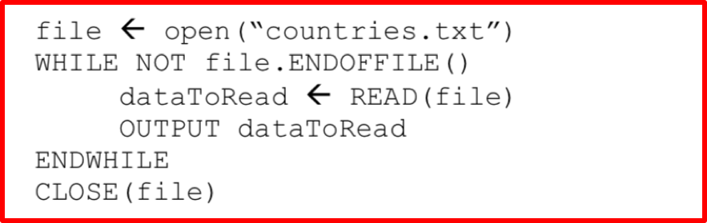

3.2.5 Input, Output and File Handling
Table of Contents
1 Input and Output

Learn It: What is input and output?
Input and Output – An input device sends information to a computer system for processing, and an output device reproduces or displays the results of that processing. Most devices are only input devices or output devices, as they can only accept data input from a user or output data generated by a computer. However, some devices can accept input and display output, and they are referred to as I/O devices (input/output devices).
- Computer programs take inputs, process data and produce outputs.
- The inputs to a program can originate from many locations:
- Keyboard,
- Microphone,
- Mouse,
- Motion sensor,
- Heat sensor,
- An input stream over a network,
- Digital camera,
- Another file,
- Touch/Graphics Pad,
- Bar code reader.
- However, the
standardform of input is from akeyboard.
- Likewise, data can be output to many devices:
- VDU/Display,
- Speakers,
- Printers,
- Another file,
- Actuators,
- Projectors.
- But the
standardform of output is themonitor (or screen). - We have used
two commandsthat enable data to come in or go out of a program:- USERINPUT
- OUTPUT
- Because the monitor and keyboard are considered standard input and output respectively, it is assumed that the data for
USERINPUTcomes from thekeyboardand the data forOUTPUTis displayed on amonitor.
User input from the keyboard
- Throughout previous topics including this one, we have used an
INPUTcommand in pseudocode and have expanded this slightly in Python to show the actual input message.
- We can use
data typeto make the input command more specific.
Displaying Output
- Throughout this topic we have only used fairly simple
OUTPUTcommands (known as a print command in Python).
- However, this is not very user friendly and it is necessary to sometimes combine the output in
a suitable message.
- Notice that the
+ symbolis used in the pseudocode. When part of a statement is a string (in this case “Hello”) the + symbol is known asconcatenation(or joining) whichallows valuesto bejoined togetherrather than added together. - By using a
comma separator, Python will automatically add a spaceafterthe string. - If the data type of the variable is also a string, then we can use the + symbol concatenation.
- If the variable
is not a string, then we would need tocastthe data type into a string using:print(“Hello “ +str(name)) - Just remember the strings appear with speech marks.
Formatting Output
- Python provides
format operatorsto allow us to output data and information to a display in aclearerand moreorganised format.
The table below shows the most common formatting conversion character: The table below shows the most common format modifiers:
- Format modifiers can be used to:
- Specify a field width.
- Specify the number of digits after the decimal point.
- Left or right-justify a value with a specified field width.
- The
% operatoris a string operator called the format operator. - Using the format operator, instead of writing something like:
- We can re-write the statement using format operators as:
- We can now incorporate the format operators with a user-friendly message as:
- The formatting above can be divided into
two parts:- The first part, “%s, %d, %s”, contains one or more format specifications. A
conversion character %tells the format operator what type of value is to be inserted into that position in the string;%sindicatesa string,%dindicatesan integer. - The second part, %(city, temperatureC, localTime),
specifiesthe values that are to be printed.
- The first part, “%s, %d, %s”, contains one or more format specifications. A
Try It: Format Operators
- Write statements to do the following:
- a) Set a=3, b=4, c= a + b, d = a*b.
- Use format operators to print the statements:
- a) 3 + 4 = 7
- b) The product of 3 and 4 is 12
Badge It: Pseudocode Challenge
Silver - Guessing Game
- Write a program for a guessing game (using pseudocode or flowchart) that does the following: (6 Marks)
- a) Assigns the word "cat" to a variable called answer.
- b) Assigns the user's input to a variable called guess.
- c) If the user correctly guesses "cat" then the program outputs "Correct", otherwise the program lets the user guess again.
- d) The program continues until the user guesses correctly.
- The programmer wants to improve the game. State two simple changes tha they could make to improve the it? (2 Marks)
Upload to Fundamentals of 3.2 Programming - 3.2.5 Input, Output and File Handling: Silver on BourneToLearn
2 File Handling
Learn It: What is File Handling?
File – A store of data, used by a program, that continues to exist when the program or computer is switched off. Many file formats exist, and the practical aspects of this section will deal with text (.txt) files, typically associated with a program called 'Notpad'.
- Often, this data will need to be
storedin afilewhich can be heldpermanentlyon storage media, from where it can be read the next time it is needed. - We will need to write a program that will save the data
between the running of the program and this is known as a
persistent data storagesystem. - We will look at how this data can be
stored outside of the programin a text file (.txt) which can be read by many different applications. - Text files contains text that is in lines. There is no other structure, unlike files of records.
In many programming languages, you will have to follow a set of steps to access the data in a text file as follows: 1. Tell the program where the file is. 2. Open the file to read in from it. 3. Read a line/lines of text from the file. 4. Close the file.
Writing to a file has similar steps: 1. Open the file to write to. 2. Write each line of text to the file one at a time, until there is no more text to write. 3. Remember to close the file at the end.
File Locations
- Text files are referred to by their name countries.txt. If the file is stored in the same location as the program, then just the name of the file will be sufficient, but if the file is stored in another folder on your computer/network you will need to use the full file name including the root address of
wherethefile is storedas shown below:
/students/user/astudent/compsci/countries.txt
Writing to a Text File
- In order to write to a text file,
allthe data needs to be converted to a string. We will be looking at how to do this with other data types later but for now you just need the following:
- Note that the code is the same in both examples in Python, as it does not matter if the original number is an
integeror afloat number. - Look at some file handling pseudocode:
- This code will set a variable called
countryto England and another calledpopulationto 53 million. - It will then
opena file called countries; if there is not one already in existence thefile will be created. - Then a new variable is created called
newDatawhich willjointhe country (England) to the population (53 million) which isconvertedto a string. - This data is then
writtento the countries text file and the file is closed.
It works in a similar way in Python:
- The country is assigned the value
Englandand the population is53 million. Thenext line is different. Not only do you need to tell Python which file to open, you also need tospecify how that file will be used.
File Handling Table
- In the example previously shown, we have specifyied
wafter the file name so thefile will be created. - The
dataisjoined togetherand thepopulationconverted to a string andassignedto the variablenewDataand there is an additional element(+”/n). This is aline break, so that if we were to add an additional line it would appear on the next line in the text file. - This
makes it easierlater if we want todisplay the data on separate linesin Python. - The data is written to the
text fileand thefile is closed. - It is very important the file is closed,* as this is when
Python*saves the changes to the file and if the file is not closed the new data will not be written to the file. - If you wanted to
add additional rows of datato Python you would not use thewcharacter at the end of the open line,* as thiswill overwritethe *original data. Instead you wouldusethea characterto add additional lines as shown below:
- *This is the same program but adapted slightly so that the user can enter the country and population and the data will be added to the existing file rather than overwriting the existing file.*
Reading from a Text File
- Using the
write methodwe looked at previously, we added a comma between each bit of data and put each record on a separate line. - To read the file we can use the following pseudocode:

- This will
display the data storedin thecountries.txt file. If you wanted eachrowtoappearon *a separate line,* you could use the line dataToRead ← READLINE(file) instead of dataToRead ← READ(file). - We can do a similar thing in Python:
- Note, Python does not need to use the
while loop. Python willstop automaticallywhen it gets to the end of the file. - The other
differenceis Python willautomaticallydisplay each record on a separate row as the/nline break was used when the data was originally written.
More examples of File Handling
Badge It: File Handling Challenge 1
Gold - Tom's Adventure Story
- Tom has written an adventure story in the file adventure.txt. - Right-click here to download the text file.
- Using the Trinket below, write a program that will allow a user to output Tom's adventure story one line a time.
- Each time the user presses the "y" key, the next line of the story should be outputted.
- The algorithm should end and close the file when it outputs the string "THE END".
Upload to Fundamentals of 3.2 Programming - 3.2.5 Input, Output and File Handling: Gold on BourneToLearn
Badge It: File Handling Challenge 2
Platinum - Even and Odd Numbers
- Create a Python program which will ask the user to enter 10 numbers. If the number is an even number (i.e. when it is divided by 2 there is no remainder) add it to a text file called even.txt. If it is an odd number add it to the file called odd.txt.
- Once they have entered all 10 numbers it should ask them if they want to see the odd or the even numbers and display the numbers from the correct file.
- Use subroutines to split the code into manageable chunks. Use this page to make notes and scribbles that you think may help you with creating the program.
Upload to Fundamentals of 3.2 Programming - 3.2.5 Input, Output and File Handling: Platinum on BourneToLearn